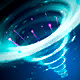

SKILLS
Kai's Skill Kit.
Kai combines powerful magical attacks with battlefield control. His most important interaction is launching enemies into the air, creating opportunities for K'arkh and other allies to punish the enemy formation.

SKILL 01 • ULTIMATE
Fetters of the Wind
Kai summons a powerful hurricane that damages every enemy it hits while launching them high into the air.
Damage scales with both Magic Attack and Skill Level.
This ability does more than deal area damage. Launching enemies interrupts abilities, breaks their momentum and briefly stuns them when they land.
Its most important synergy is with K'arkh. K'arkh's strongest attacks are triggered against airborne enemies, making Kai one of his most natural partners.
A well-timed hurricane can create devastating combinations capable of eliminating several enemies in rapid succession.
Activating Fetters of the Wind also triggers Kai's Weapon Artifact, granting a team-wide Magic Attack bonus.
SIGNATURE SYNERGY: Kai launches enemies into the air, creating ideal targets for K'arkh's powerful attacks.
SKILL 02
Breath of the Abyss
Kai creates a pillar of flames in the center of the enemy formation, dealing heavy Magic Damage.
Damage scales with Magic Attack.
Unlike abilities that primarily pressure the frontline, Breath of the Abyss strikes directly into the middle of the opposing team.
This makes it particularly useful for threatening damage dealers and support Heroes positioned behind their tanks.
KEYWORD: MID-FORMATION PRESSURE. Breath of the Abyss damages enemies in the middle of the formation, not just the frontline.
Kai launches a blazing sphere at the enemy with the lowest Magic Defense.
After the initial impact, the sphere explodes, dealing additional damage over time.
Damage scales with Magic Attack.
This targeting mechanic resembles Xe'Sha, who also prioritizes enemies with low Magic Defense.
The damage-over-time component provides another advantage: damage over time cannot be dodged.
That allows Kai to apply more consistent pressure against dodge-oriented teams.
TARGETING MECHANIC: Explosive Sphere targets the enemy with the lowest Magic Defense and applies damage over time that cannot be dodged.
SKILL 04 • PASSIVE
Stolen Life
Stolen Life permanently increases Kai's Vampirism.
The bonus depends only on Skill Level.
Vampirism gives Kai a degree of independence by allowing him to recover Health through his damage.
This is especially useful in longer battles, where constant self-healing can help him remain active without relying entirely on external healers.
SURVIVABILITY: Stolen Life provides permanent Vampirism, allowing Kai to sustain himself during prolonged battles.